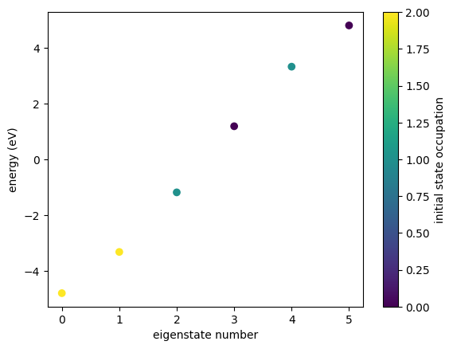

Lindblad Dissipation
To model dissipation in greater depth, GRANAD makes a Lindblad dissipation model available. The mathematical details are laid out in Pelc et al., 2024 and revolve around the following equation
where \(\gamma_{ij}\) is the transition rate from state i to state j and \(f\) is a relaxation functional to prevent breaking the Pauli principle (pushing more than 2 electrons into the same energetic state).
Lindblad Relaxation dynamics of the Metallic Chain
In the following, we will consider a metallic chain with a uniform transition rate.
from granad import MaterialCatalog, Hexagon, Pulse
flake = MaterialCatalog.get("metal_1d").cut_flake( 6 )
flake.set_excitation(flake.homo, flake.homo+2, 1)
flake.show_energies()

We can now build the matrix of transitions rates with a uniform rate of \(\gamma = 10\) as follows
We can inspect the lumo-homo transition rate, for example, as
10.0
GRANAD dispatches the non-hermitian functional depending on the relaxation_rate input type. If you pass a float, GRANAD uses the decoherence approximation. If you pass an array, it uses the Lindblad dissipator with a (smooth approximation of) the Heaviside function as the saturation functional. We will talk about how to modify the relaxation functional shortly.
We now integrate the master equation.
labels = [f"{e:.2e}" for e in flake.energies]
result = flake.master_equation(relaxation_rate = gamma_matrix,
end_time = 0.2,
density_matrix = ['occ_e'],
)
flake.show_res(result, show_illumination=False, plot_labels = labels)
RHS compiled
RHS compiled
100.0 %

Comparing this to the phenomenological approach
result = flake.master_equation(relaxation_rate = gamma,
end_time = 0.2,
density_matrix = ['occ_e'],
)
flake.show_res(result, show_illumination=False, plot_labels = labels)
RHS compiled
RHS compiled
100.0 %

GRANAD imposes a degeneracy tolerance on the states. This means that all states separated by less than a numerical threshold are considered degenerate. The threshold is specified as variable flake.params.eps.
Modifying the saturation functional
The saturation functional can be customized by defining a saturation function and modifying the dissipator dict (for more information, please consult the tutorial on custom time evolution).
In short, you
- initialize a dissipator with your custom relaxation functional
- pass the gamma matrix as the relaxation rate as usual
We will study what happens if we completely turn off saturation
import jax.numpy as jnp
def no_saturation(x):
return 1.
dissipator = flake.get_dissipator(saturation = no_saturation)
result = flake.master_equation(relaxation_rate = gamma_matrix,
dissipator = dissipator,
end_time = 1,
density_matrix = ['occ_e'],
)
flake.show_res(result, show_illumination=False, plot_labels = labels)
RHS compiled
RHS compiled
100.0 %

We observe an almost complete collapse into the IP ground state, prohibited only by what we can quickly check to be an interaction effect.
result = flake.master_equation(relaxation_rate = gamma_matrix,
dissipator = dissipator,
end_time = 1,
density_matrix = ['occ_e'],
coulomb_strength = 0. # turn off Coulomb interaction
)
flake.show_res(result, show_illumination=False, plot_labels = labels)
RHS compiled
RHS compiled
100.0 %

Corrected Lindblad
A precursor of the saturated Linblad model replaces \(D[\rho] \rightarrow D[\rho - \rho_0]\), i.e. it applies the Lindblad operators to \(\rho - \rho_0\), much like the phenomenological dissipator.
It can be shown that this model for an \(N\) electron system is equivalent to the phenomenological dissipator with relaxation rate \(r\) if \(\gamma^{ij} = \gamma = \frac{r}{N}\). We can check this is as follows
from granad import dissipators
gamma_matrix = jnp.ones_like(flake.hamiltonian)
dissipator = {"corrected":dissipators.CorrectedLindblad(no_saturation)}
result = flake.master_equation(relaxation_rate = gamma_matrix,
dissipator = dissipator,
end_time = 1,
density_matrix = ['occ_e'],
)
flake.show_res(result, show_illumination=False, plot_labels = labels)
RHS compiled
RHS compiled
100.0 %
We can now compare to the phenomenological dissipator with its rate scaled by \(N\).
result = flake.master_equation(relaxation_rate = 6.,
end_time = 1,
density_matrix = ['occ_e'],
)
flake.show_res(result, show_illumination=False, plot_labels = labels)
RHS compiled
RHS compiled
100.0 %
Wigner-Weisskopf transition rates
GRANAD also offers the IP wigner_weisskopf_transition_rates directly as a gamma matrix like
import matplotlib.pyplot as plt
gamma_matrix = flake.wigner_weisskopf_transition_rates
plt.matshow(gamma_matrix.real)
plt.show()

NOTE: things will likely break if you use these rates directly without rescaling them somehow.